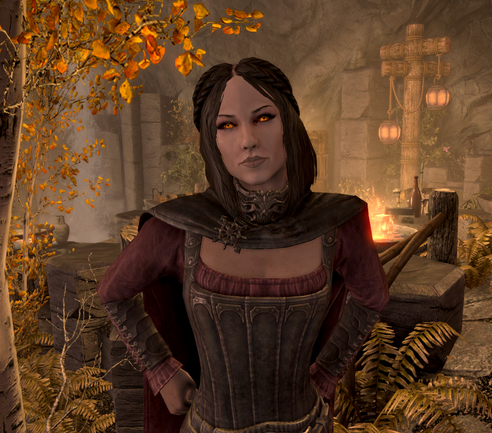

Kagehisa The Great
Race: Khajitt
Talent: Two-Handed Swordsman
Music of the Soul: Kyne's Peace
Likes: Snow,loneliness,nights in taverns with music and women,scratching things
Dislikes: Fights,his past in Dark Brotherhood

The Woman of Kagehisa's Dreams - Serana.
Loyal companion, gorgeous woman and a pure-blooded vampire.
Smart, brave and sarcastic. Not really interested in Kagehisa romantically, but due to his "lonely loner on the lonely road...alone" lifestyle, it doesn't really bothers Kagehisa.